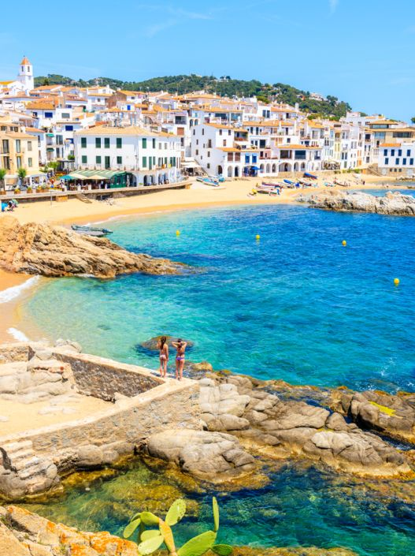

Ова врста туризма се прва развила у Шпанији, а данас даје највише приходе за шпанску економију. Блага клима током целе године и велике пешчане плаже које се простиру дуж Медитерана и Атлантског океана, као и од своја два архипелага (Балеарска и Канарска острва) највише привлаче туристе из северне Европе већ дужи низ година.
